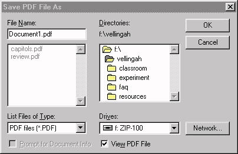
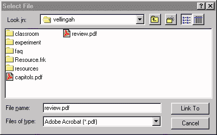

Creating a PDF File
PDF Prerequisites | Built
in Functionality | Printing
a PDF File | Linking to a PDF file
| Acrobat Reader
In order to create a PDF file, your
computer must have the Adobe
Acrobat Program installed!
Portable Document Format (PDF) files come in handy for tests,
quizzes or other important documents which must retain the original
formatting even when distributed across the Internet. These pages
may only be changed using the Acrobat program.
With Adobe Acrobat installed, PDF files can be created using
either of two methods. One method (the easiest) occurs when another
progam adds the PDF creation option to its File menu. The second
option (more difficult) is when you must "print" to
a PDF file. Both will be covered by these instructions.
Option 1 - PDF functionality within
a program.
- Open a new document in a program that has had the PDF option
added to it, such as Microsoft Word97 in the Elementary Education
Department lab.
- Create the desired page in the program. You may format it
any way you would like and it will transfer to the PDF format
exactly as it appears on your screen.
- After completing your document, save it initially as a regular
file to your disk.
- Then, from the File menu, go to the "Create Adobe PDF"
option and select the submenu item "Print via PDFwriter..."
- A box should appear that says "Save PDF File As...".

- Name the document and be sure to include the pdf suffix!
- Make sure that the "List Files of Type" is also
PDF.
- Confirm that the box labeled "View PDF file" is
checked.
- Save it in your web folder on your own disk. Click "OK."
- It will then show a box as if your file were printing.
- When it has completed the conversion process, either Acrobat
or Acrobat Reader will launch and you will see your document
in a new window. This simply allows you to see the file as it
appears in the PDF format.
Printing a PDF file
- Open a new document in any program.
- Create the document as you want it to look. You may format
it any way you would like and it will transfer to the PDF format
exactly as it appears on your screen.
- After completing your document, save it initially as a regular
file to your disk.
- Then, from the File menu, select "Print"
- When the Print dialog box appears, change the Printer to
"Acrobat PDFWriter" and click "Print"

- A box should appear that says "Save PDF File As".
- Name the document and be sure to include the pdf suffix.
- Make sure that the "List Files of Type" is also
PDF.
- Confirm that the box labeled "View PDF file" is
checked.
- Save it in your web folder on your own disk. Click "OK."
- It will then show a box as if your file were printing.
- When it has completed the conversion process, either Acrobat
or Acrobat Reader will launch and you will see your document
in a new window. This simply allows you to see the file as it
appears in the PDF format.
- Be sure to go back to the Print menu and change the Printer
back to the default printer when you are done.
Linking a PDF file to a Web Page
Open Adobe Pagemill and the web page that the PDF file will
be linked to.
Create link text for this as you would for any other file.
Click "Browse" to find your PDF file. A "Select
File" dialog box should appear. You may have to change the
menu in the "File of types:" to Adobe Acrobat (.PDF)
to see your PDF files. Click the PDF file and click "Link
To" or simply double-click the PDF file to create the link.

Test the link by changing to Preview Mode in PageMill. Click
the link and the file should open in Acrobat or Acrobat Reader.
Downloading Acrobat Reader to View PDF
File
If a user on the net comes across your page, they cannot view
the PDF file unless they have Adobe Acrobat or Acrobat Reader.
A user can access Acrobat Reader at no cost on the internet, but
many people do not know this. To make it easier for the user,
create a link on your page to help them download the program.
To do this, follow these directions.
· Type a phrase next to your PDF page link such as "To
view this file requires Adobe PDF reader, to download file, click
HERE."
· Make the word HERE a link to the Adobe PDF Reader page.
The URL is: http://www.adobe.com/prodindex/acrobat/readstep.html
· Those who do not have this program can download and install
Acrobat reader at no cost in order to use PDF documents.
Here is an example of what a PDF file link would look like.
Sample PDF Page (To view
this file requires Adobe PDF reader, to download file, click HERE)